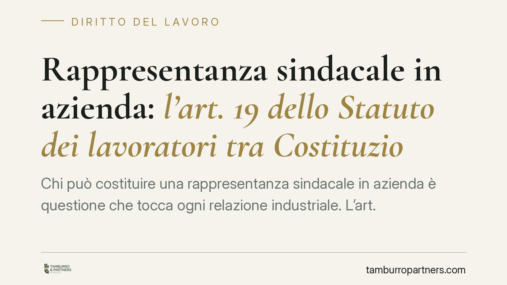

Rappresentanza sindacale in azienda: l'art. 19 dello Statuto dei lavoratori tra Costituzione e giurisprudenza
Chi può costituire una rappresentanza sindacale in azienda è questione che tocca ogni relazione industriale. L'art. 19 dello Statuto dei lavoratori, dopo il referendum del 1995 e le successive pronunce della Corte costituzionale, fissa criteri precisi. Un tema in continua evoluzione, dove errori di gestione datoriale possono sfociare in condotta antisindacale. Ricostruiamo il quadro normativo vigente e le sue ricadute operative.

Inquadramento normativo
La libertà sindacale trova fondamento negli artt. 39 e 3 della Costituzione: il primo garantisce l'organizzazione sindacale libera, il secondo impone la rimozione degli ostacoli di fatto all'eguaglianza. È in questa cornice che si colloca l'art. 19 della Legge 20 maggio 1970, n. 300 (Statuto dei lavoratori), che disciplina la costituzione delle rappresentanze sindacali aziendali (RSA).
Il testo attuale dell'art. 19 è frutto del referendum abrogativo del 1995. Prima di quella consultazione, la norma riconosceva il diritto a costituire RSA anche nell'ambito dei sindacati aderenti alle confederazioni maggiormente rappresentative sul piano nazionale. Il referendum ha abrogato quel criterio confederale, lasciando in vigore il solo requisito residuo contenuto nella lettera b): possono costituire RSA le associazioni sindacali «firmatarie di contratti collettivi di lavoro applicati nell'unità produttiva».
Su questo testo residuo è intervenuta la Corte costituzionale con la sentenza n. 231 del 2013. Il giudice delle leggi ha dichiarato l'illegittimità dell'art. 19, lett. b), nella parte in cui non riconosceva il diritto a costituire RSA anche ai sindacati che, pur non firmatari, avessero comunque partecipato alle trattative relative al contratto applicato in azienda. La ratio: evitare che il datore di lavoro potesse escludere un sindacato sgradito semplicemente rifiutandogli la firma finale, aggirando così la garanzia costituzionale.
Le tre sigle da non confondere
Un punto di frequente confusione riguarda i diversi organismi di rappresentanza. Vale la pena distinguerli.
- RSA (rappresentanza sindacale aziendale): costituita dai lavoratori nell'ambito dei sindacati che soddisfano il requisito dell'art. 19. Ha titolarità dei diritti sindacali dello Statuto (assemblea, permessi, locali, affissione).
- RSU (rappresentanza sindacale unitaria): organismo elettivo unico, disciplinato dalla contrattazione collettiva (in particolare il Testo Unico sulla rappresentanza del 2014). È eletto dai lavoratori e non presuppone i requisiti dell'art. 19.
- RLS (rappresentante dei lavoratori per la sicurezza): figura prevista dal D.Lgs. 81/2008 in materia di salute e sicurezza, con competenze distinte e specifiche.
Si tratta di piani diversi, che rispondono a logiche e fonti differenti. Confonderli espone a errori gestionali significativi.
Implicazioni pratiche per l'azienda
Per il datore di lavoro il tema non è astratto. Il riconoscimento (o il diniego) dei diritti sindacali a una determinata sigla incide sui rapporti quotidiani: concessione di permessi, spazi in bacheca, locali per l'attività, indizione di assemblee.
Un diniego arbitrario o un trattamento discriminatorio tra sigle può integrare condotta antisindacale ai sensi dell'art. 28 dello Statuto. Il relativo procedimento ha carattere sommario e d'urgenza: il giudice del lavoro, su ricorso degli organismi locali dei sindacati nazionali interessati, può ordinare la cessazione del comportamento e la rimozione dei suoi effetti con decreto motivato immediatamente esecutivo. Non esiste un termine di decadenza breve fissato dalla legge per proporre l'azione, ma la natura urgente del rimedio rende opportuno un intervento tempestivo, anche per non consolidare situazioni pregiudizievoli.
Il criterio della «partecipazione alle trattative» richiede poi un'attenzione particolare nella gestione documentale: verbali, convocazioni e composizione dei tavoli negoziali diventano prova rilevante per stabilire chi abbia titolo a costituire una RSA.
Cosa fare in concreto
- Mappate le sigle presenti in azienda e verificate, per ciascuna, il titolo su cui fondano la richiesta di diritti sindacali (firma del contratto applicato o partecipazione alle trattative).
- Conservate i verbali negoziali e ogni documento che attesti la composizione dei tavoli: sono la base probatoria per valutare la legittimazione ex art. 19, lett. b).
- Applicate un trattamento uniforme tra le sigle aventi titolo: disparità ingiustificate su permessi, locali e assemblee sono terreno tipico dell'art. 28.
- Distinguete i piani RSA, RSU e RLS nella prassi interna e nella modulistica, evitando di attribuire diritti a organismi non legittimati.
- Verificate ogni decisione dubbia con un consulto legale prima di formalizzare dinieghi, valutando l'esposizione al procedimento per condotta antisindacale.
Osservazioni conclusive
La materia resta in movimento e si nutre tanto della contrattazione collettiva quanto degli orientamenti giurisprudenziali. Consigliamo di monitorare gli aggiornamenti e di ancorare ogni scelta gestionale a una verifica puntuale dei requisiti, evitando automatismi che, nel diritto sindacale, sono spesso fonte di contenzioso.
---
Contributo informativo a cura di Tamburro & Partners - Avv. Giuseppe Tamburro. Non costituisce parere legale.
Ogni storia di lavoro ha i suoi tempi.
Se gestisci HR e vuoi un confronto su contenzioso, ispezioni o licenziamenti, scrivi allo studio. Ti rispondiamo entro un giorno lavorativo.